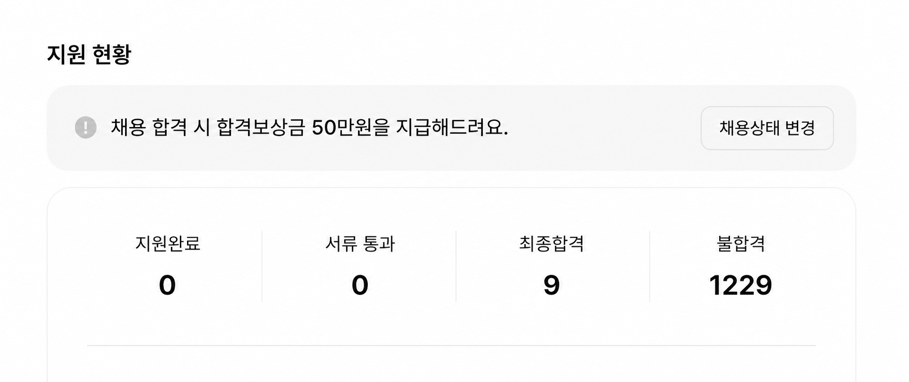

개붕이들 체감은 어떰?

개붕이들 체감은 어떰?
나이 많은 사람이 새롭게 너가 일하는 분야의 공부하면 취업도 가능한거야? 맞다면 좀 자세하게 설명좀..어떤걸 공부해야하는지..
그렇게는 어려울것 같음.
전기공학 학부와 유관한 전공 혹은 전기기사 자격증
'대전력, 고전압, 전력계통' 관련 석사 학위
이정도 보유한 상태에서 '청년' 인 경우 가능할듯.
우리회사 규모도 작고 업계에서나 이름 알지 생판 신입들은 잘 모르고 위치도 애매해서 공고 올리면 신입들 전공도 상관없는 애들 2명 지원하고 이랬는데 요즘 공고 올리면 인서울 학교 애들로 30명씩 지원하더라
신입기준으로는 ㄹㅇ개씹씹박살났고 경력직들은 아직은 괜찮은데 거기도 지금 경쟁 장난아니라곤 하던데..
대기업만 쳐다보지 말라니까
남들 다 하는거 쳐하면서 심지어 특출나게 잘하는 것도 아니면서 안된다고 징징대는건 무슨 심리지
근데 기업이 채용공고 냈으면 누군가는 뽑혀서 일하는거잖아?
나보다 능력이 좋든 운이 존나 좋든 누구든....
옛날에 내가 면접보러 갔을 때 절반이 미국 아이비리그고 나머지 절반이 서연고였는데
아이비리그 출신 몇명만 뽑혀 가겠지 이제는
제조,건설쪽 납품하는 자영업잔데 제조랑 건설은 일단 망했음 일이 없음
지금이라도 기술 배워라.. ㅋㅋ 일론 머스크가 얘기했음 기술직들만 살아남을거라고
다시 공무원의 시대가 오는건가
ㄴㄴ 오히려 경쟁률 떨어지는중 걍 마인드가 변함 오래 안정적으로 다니는 것보다 짧게 큰 돈을 벌고 수평적인 조직을 선호하는 세대로 변했다보니 공무원이 다시 선호 될 일은 없을듯 아니면 이대로 비선호로 바뀌어서 처우개선 꾸준히 계속 되다보면 다시 뜰지도
글쎄다 쉬었음 몇 년 하고서도 그런 생각이 들려나
IT기업 현직 관리자 개붕이인데, 우리회사도 작년에 전체인력 20프로정도 감축함. 그런데 AI도입하고나서 인력을 줄고 일은 그대로인데 문제없이 잘 소화하고 있음. 야근도 많이 줄음
여기서 더 채용을 할지 말지는 업황보면서 결정할거 같은데, 인력 줄어도 회사 잘 돌아가는거 보면서 지금 나가면 ㅈ되겠구나 싶음 ㅠ
아직 배부름 공무원 경쟁률이 헬되면 그때가진짜임
난 개인사업자 하다가 부업 구한거라 좀 다른가 싶긴한데 잘 구해지던데..
이직 1.5번 정도 해서 독일계면서 미국계 회사로 꽤 좋은데 잘 들어옴.
지게차 기사라서 쟤네가 원하는 사무직들이랑 또 다른가?
다니는 직장 무조건 버텨야함
지금나가면 그냥 개백수 확정임
나도 나가서 좀 쉬고 싶은데 나가면 재취업 못 할 것 같음 ㅠㅠ
디자인회사다니는데 진짜 절망적인듯
AI가 진짜 일자리를 줄이기 시작하는구나
AI가 신입사원 저연차가 할일을 다해주는데
한국같이 사람자르기힘든 구조에서 왜 뽑아
난 이런글 보면 슬픈게
저것도 학벌 좋은사람 좋은 직장이야기지 위에 사람들의 한탄 같은?
결국 그냥 잘나가는 사람들의 한탄일뿐임
중소기업이나 다른직업은 아직 그래도 할만한데 할만하다고 하면 또 거기는 왜감? 그러니
AI 가 너무 잘함. 사람 뽑아 가르칠마음이 안생길정도로 잘함. 서넛이 하던거 혼자다됨.... 진짜 잘하는 사람은 더 대단한걸 하고있음
Ai 때매 개잡일 줄어서 사람손 들 필요함
당직 있는 직종인데 사람 잘 나가고 잘 들어옴
요즘은 생산직 뽑는데도 대졸이 몰리더라
가공이나 연마업같은 제조업직종도 지금 사람없어서
우리회사도 외노자 채용 존나고민하던데
내 분야는 취업 이직 쉽긴함. 자리도 많고
오히려 지금 베이붐 세대 다 퇴직하는 시대라
사람 없어서 못뽑음
대전력, 고전압, 전력계통 관련 연구직